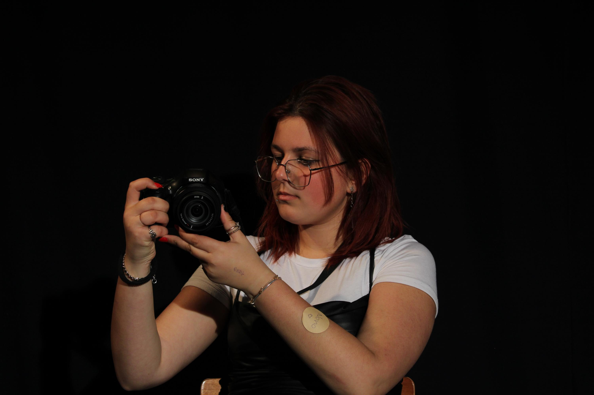
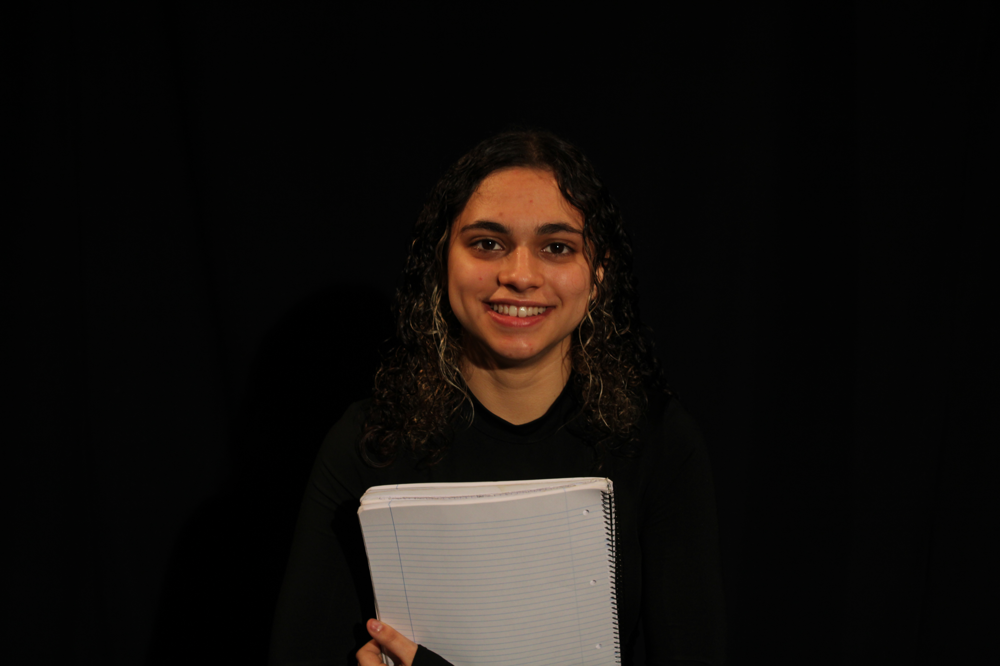

Diretora e Realizadora, é responsável pela organização de todas as etapas da produção da curta-metragem, desde a interpretação do roteiro até a direção das cenas durante as filmagens;
Produtora, é responsável por supervisionar e coordenar todos os pontos da produção, garantindo que o projeto seja concluído dentro do orçamento e dos prazos estabelecidos.

Leonor Martins
Diretora de fotografia: Leonor irá captar cada imagem que vier pela frente, detalhará e interpretará visualmente o roteiro enquanto dialoga constantemente com o seu grupo de trabalho;
Pós-produtora: filmará e montará o trabalho até este ser concluído definitivamente.
Catarina Monteiro
Diretora de arte: Catarina irá criar a estética visual dos cenários, figurinos, adereços e paletas de cor;
Fotografa de cena: capturará as imagens de modo que transmita a visão da curta-metragem através das fotografias.

Ana Neto
Diretora de som: Ana será responsável pela idealização estética do som da curta-metragem, pela captação de áudio em cena, diálogos e sons ambientes;
Divulgadora: Ana terá o cuidado de divulgar o trabalho com a criação da página web.